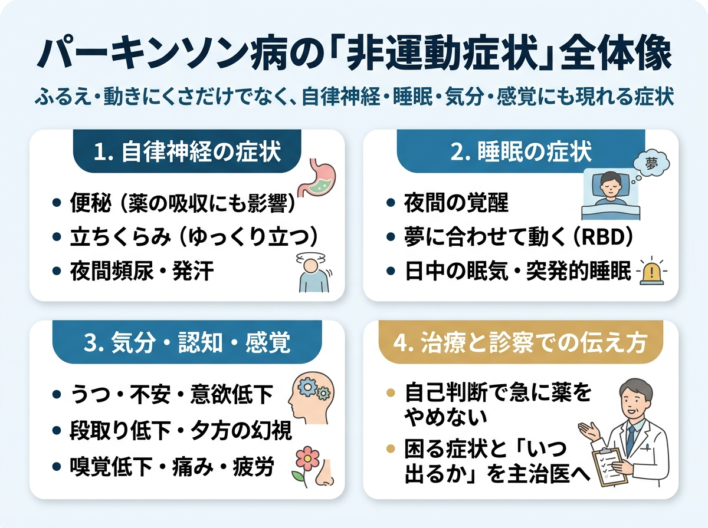
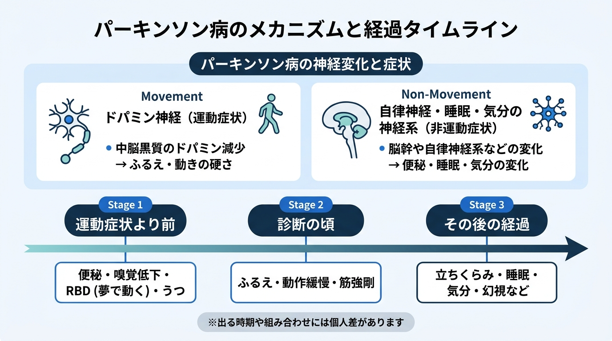

パーキンソン病の非運動症状
4つの領域（自律神経・睡眠・こころと認知・感覚）、前駆期から診断後までの経過と背景機序、受診前のメモと赤旗症状を図で確認できます。画像を押すと拡大し、小さな画面では横に動かして読めます。
パーキンソン病の非運動症状 全体像

前駆期からの経過と脳・自律神経の関与

4つの領域（自律神経・睡眠・こころと認知・感覚）、前駆期から診断後までの経過と背景機序、受診前のメモと赤旗症状を図で確認できます。画像を押すと拡大し、小さな画面では横に動かして読めます。

